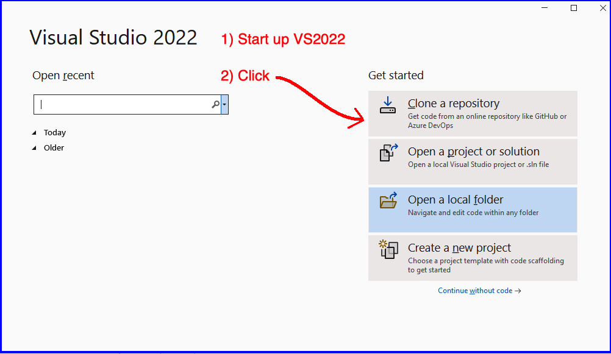

Using VS2022 to clone your CSSE373 Repo
- Now it is time to use VS2022 to clone your CSSE373 repo
- The 7 screen shots below walk you through the repo cloning process
Start up VS2022 and get started

Click to browse your GitHub repos

Start to sign into your GitHub account
Sign in to GitHub
Authorize VS2022 to access GitHub account
Find your CSSE373 repo
VS2022 shows your cloned CSSE373 repo